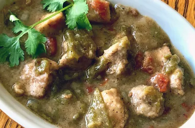

MAIN DISHES
7 Air Dryer Dinners for Every Night of the Week
Your beloved countertop appliance is going to be as busy as you are: use it for crispy chicken, shrimp, and so much more.
Food News

My Dad Has Won 3 Chili Cook-Offs—Here Are His Secrets
Our Fall Issue of Allrecipes Magazine Is Here

Dunkin’s Fall Menu Is the Best We’ve Seen in Years

I Finally Found the Best Vacuum Sealer for My Tiny Kitchen
Trending now

Trends
The 18 Recipes We Can’t Wait To Make This September

Tailgating
The Most Popular Tailgating Foods Across 34 States

Fruit desserts
14 Perfect Fruit Desserts for Late Summer top-down view of Hatch chili verde in an oval white bowl garnished with a cilantro sprig

Hatch chili
We're Hooked on Hatch Chiles
4
5
6
7